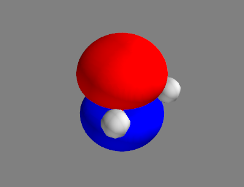
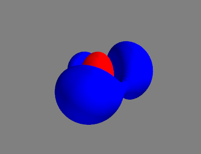
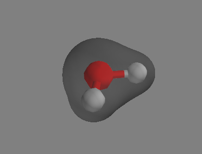

Plotting of grid data
In the previous sections, we have implemented the Hartree-Fock method, which delivers the molecular orbitals. These, as well as some other quantities derived from them, are functions of 3 spatial coordinates. In this section, we will show how to visualise these functions in 3D space.
We will use the Mayavi package to plot grid data.
This can be installed with
mamba install -c conda-forge mayavi
If you wish to use Mayavi with Jupyter notebooks, you will need to install the ipyevents package with
mamba install -c conda-forge ipyevents
Functions for Isosurface Plotting
We start by importing the necessary packages.
import numpy as np
from mayavi import mlab
If you are using Jupyter notebooks, you will need to run the following cell to initialize Mayavi immediately after importing it:
mlab.init_notebook()
Make sure that you get the output
Notebook initialized with ipy backend.
Molecular orbitals are one-electron wavefunctions. In our HF calculations, we represent them in the basis of atomic orbitals, which are themselves one-electron wavefunctions. To visualize them in 3D space, we need to evaluate them on a spatial grid. We shall at first define a function to evaluate a contracted Gaussian basis function in space:
def evaluate_gaussian_basis(g, x, y, z):
i, j, k = g.ijk
x0, y0, z0 = g.A
g_val = 0.0
for n, d, alpha in zip(g.norm_const, g.coefs, g.exps):
g_val += n * d * (x - x0)**i * (y - y0)**j * (z - z0)**k \
* np.exp(-alpha * ((x - x0)**2 + (y - y0)**2 + (z - z0)**2))
return g_val
Of course, we have to build a spatial grid beforehand. This can be done with the following function:
def build_grid(xlim, ylim, zlim, nx, ny, nz):
x_ = np.linspace(*xlim, nx)
y_ = np.linspace(*ylim, ny)
z_ = np.linspace(*zlim, nz)
x, y, z = np.meshgrid(x_, y_, z_, indexing='ij')
return x, y, z
Afterwards, we define a function to transform the MOs from the AO basis to the position basis:
def evaluate_mo_grid(mol, grid, mo_energy, mo_coeff):
x, y, z = grid
# Build MO coefficient matrix in spin-orbital basis
n_spatial_orb = len(mo_energy)
c_spin = np.zeros((n_spatial_orb * 2, n_spatial_orb * 2))
c_spin[:n_spatial_orb:, ::2] = mo_coeff
c_spin[n_spatial_orb:, 1::2] = mo_coeff
# Evaluate AOs on the grid
ao_grid = np.zeros((n_spatial_orb * 2,
x.shape[0], x.shape[1], x.shape[2]))
for i, g in enumerate(mol.basisfunctions):
g_grid = evaluate_gaussian_basis(g, x, y, z)
ao_grid[i] = g_grid
ao_grid[i + n_spatial_orb] = g_grid
# Transform to MOs
mo_grid = np.einsum('ij,ixyz->jxyz', c_spin, ao_grid)
return mo_grid
In the end, we can define a function to plot the MOs, along with the atoms and bonds for reference:
R_VDW = {
'H': 2.0787,
'C': 3.2125,
'N': 2.9291,
'O': 2.8724,
}
R_COV = {
'H': 0.6047,
'C': 1.4173,
'N': 1.3417,
'O': 1.1905,
}
ATOM_COLOR = {
'H': (0.8, 0.8, 0.8),
'C': (0.0, 1.0, 0.0),
'N': (0.0, 0.0, 1.0),
'O': (1.0, 0.0, 0.0),
}
def visualize_cube(mol, grid, density, isovalues, colors, figure, **kwargs):
# Draw atoms
for a in mol.atomlist:
p = mlab.points3d(
*a.coord, R_VDW[a.symbol], color=ATOM_COLOR[a.symbol],
scale_factor=0.5, figure=figure,
)
# Draw bonds
for i, a in enumerate(mol.atomlist):
ca = a.coord
sa = a.symbol
ra = R_COV[sa]
for b in mol.atomlist[:i]:
cb = b.coord
sb = b.symbol
rb = R_COV[sb]
vab = cb - ca
rab = np.linalg.norm(vab)
if rab < (ra + rb) * 1.2:
mid = ca + vab * (ra / (ra + rb))
p = mlab.plot3d(*np.vstack((ca, mid)).T, tube_radius=0.2,
color=ATOM_COLOR[sa], figure=figure)
p = mlab.plot3d(*np.vstack((cb, mid)).T, tube_radius=0.2,
color=ATOM_COLOR[sb], figure=figure)
# Draw isosurface
for ival, c in zip(isovalues, colors):
p = mlab.contour3d(*grid, density, color=c, contours=[ival],
figure=figure, **kwargs)
return p
Visualizing Molecular Orbitals
Now, we can take an HF calculation of water
# Coordinates are in the unit of Angstrom.
o1 = Atom('O', [ 0.000, 0.000, 0.000], unit='A')
h1 = Atom('H', [ 0.758, 0.587, 0.000], unit='A')
h2 = Atom('H', [-0.758, 0.587, 0.000], unit='A')
mol = Molecule()
mol.set_atomlist([o1, h1, h2])
mol.get_basis('sto-3g')
rhf = HartreeFock(mol)
rhf.initialize()
e_scf = rhf.run_hf(verbose=0)
construct a grid
XLIM, YLIM, ZLIM = (-5.0, 5.0), (-5.0, 5.0), (-5.0, 5.0)
NX, NY, NZ = 80, 80, 80
grid = build_grid(XLIM, YLIM, ZLIM, NX, NY, NZ)
mo_grid = evaluate_mo_grid(mol, grid, rhf.mo_energy, rhf.mo_coeff)
and plot HOMO and LUMO of water:
ISOSURFACE_COLORS = [(1, 0, 0), (0, 0, 1)]
ORBITAL_ISOVALUES = [0.05, -0.05]
ihomo = (rhf.nocc - 1) * 2
ilumo = rhf.nocc * 2
fig_homo = mlab.figure()
p_homo = visualize_cube(mol, grid, mo_grid[ihomo], ORBITAL_ISOVALUES,
ISOSURFACE_COLORS, fig_homo)
fig_lumo = mlab.figure()
p_lumo = visualize_cube(mol, grid, mo_grid[ilumo], ORBITAL_ISOVALUES,
ISOSURFACE_COLORS, fig_lumo)
Just as with Matplotlib, we need to call the show() function to display
our figures:
mlab.show()
The support of Mayavi in Jupyter Notebook is limited, as each notebook cell
can only handle one Mayavi figure, and instead of calling mlab.show(), the
plot should be displayed. In this case, you should use the following 2 cells
to visualise HOMO and LUMO of water:
fig_homo = mlab.figure()
p_homo = visualize_cube(mol, grid, mo_grid[ihomo], ORBITAL_ISOVALUES,
ISOSURFACE_COLORS, fig_homo)
p_homo
fig_lumo = mlab.figure()
p_lumo = visualize_cube(mol, grid, mo_grid[ilumo], ORBITAL_ISOVALUES,
ISOSURFACE_COLORS, fig_lumo)
p_lumo
Since the calling of mlab.show() is incompatible with Jupyter Notebook
(unlike with Matplotlib, where the calling of plt.show() is unneccesary in
notebooks but not obstructive), we will omit it in code blocks from now on.
Just remember to add this line to your code when using the “classic” Python.
We get figures like this:
 HOMO
 LUMO
Visualising Electron Density
While the MOs are just mathematical constructions, the electron density is a measurable quantity.
The spin-free one-electron density is defined as where stands for the spatial coordinate, the spin coordinate and a combination of both of them. For a wavefunction expressed as a Slater determinant, this expression simplifies to where ’s are occupied spin-orbitals.
We can calculate and visualize the density using:
DENSITY_COLORS = [(0.3, 0.3, 0.3)]
DENSITY_ISOVALUES = [0.05]
density_grid = np.zeros((NX, NY, NZ))
for d in mo_grid[:rhf.nocc * 2]:
density_grid += np.abs(d)**2
fig_density = mlab.figure()
visualize_cube(mol, grid, density_grid, DENSITY_ISOVALUES,
DENSITY_COLORS, fig_density, opacity=0.5)
This time, we should get something like this:
